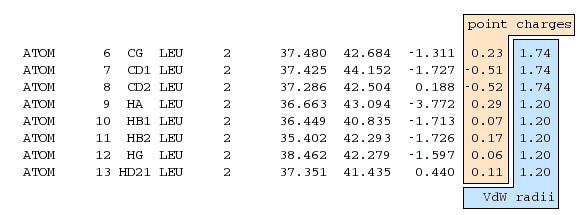

|
In this tutorial you will generate molecular surfaces from PDB files and
calculate their surface properties. You will than use these data to setup an
experimental database and prepare the shell script to run the calculations.
Finally, you will run the surface comparison search locally.
-
Data Preparation
-
Generation of the Directory Structure
-
Generation of the Molecular Surfaces
-
Preparation of the Experiment
-
Tailoring the
run.sh Script
1. Data Preparation
To prepare the molecular surfaces and experimental input data via MSMS PDB files
with special data columns are necessary. The preparation of this files is out of
scope of this tutorial but we will now give a short description of the
modifications that are necessary in the ATOM and
HETATM entries:
-
The first eight columns must be filled according to the
PDB file format specification. (leave them as they
are)
-
The ninth column must contain atomic data that
is suitable to construct a molecular field. (For the moment) these can be only
atomic point charges to construct an electrostatic potential (ESP).
-
The ninth column must contain the Van der Waals
radii of the single atoms. These radii are necessary to construct the
molecular surface with MSMS. You can use the
pdb_to_xyzr and
pdb_to_xyzrn helper scripts of MSMS to get suitable VdW radii.
-
The remaining columns can be left as they are.

Figure 1.1: Necessary modifications in the ATOM
and HETATM entries of PDB files
The prepared PDB files for this tutorial are available from the file
msms_small_data.tar.gz. Please unpack
this file into an empty directory (herein called TUTORIAL_HOME)
using the commands:
% cd TUTORIAL_HOME
% gunzip msms_small_data.tar.gz
% tar fx msms_small_data.tar
The structure files are now prepared and we can proceed with the next step.
2. Generation of the Directory Structure
For the preparesurfcomp script used in
step 4 the input data must be stored in a special
directory structure. To do this create a new subdirectory in
TUTORIAL_HOME called input with subdirectories called:
center, data, pdb, own.
% mkdir input
% mkdir intput/center
% mkdir input/data
% mkdir input/msms
% mkdir input/pdb
Now the directories are ready to store the molecular surface information
generated in the next steps. What is stored in which directory is described in
the preparesurfcomp man page.
3. Generation of the Molecular Surfaces
When the PDB files are ready and the directory structure has been set up
properly you can generate the molecular surfaces with MSMS. Use the
script msmsprepare for this step. This script needs information
about the location of the PDB file, the output path, how the surface and its
properties should be calculated and in which format these data should be stored.
In the present case you must only specify the name of the pdb files and the
output directory (TUTORIAL_HOME/input because every other
parameter can be used with its default value. For a detailed description look at
the msmsprepare man page.
% msmsprepare --pdb=1THL.pdb --path=input
% msmsprepare --pdb=1TMN.pdb --path=input
This should generate the surface files for the structures 1THL and 1TMN. If you
list the subdirectories of input you should get the following
list:
% ls -R input
input:
center data msms pdb
input/center:
input/data:
1THL_MSMS_3.0.dat 1TMN_MSMS_3.0.dat
input/msms:
1THL_MSMS_3.0.msms 1TMN_MSMS_3.0.msms
input/pdb:
1THL_MSMS_3.0.pdb 1TMN_MSMS_3.0.pdb
4. Preparation of the Experiment
The last step in the preparation protocol is the creation of the experiment
database and the shell script that can be used to invoke the calculation. For
that purpose you can use the preparesurfcomp script which examines
the input directory and builds the database for the experiment and
a shell-script, which can start the calculation.
As you have created only two surfaces a single experiment will
be added to the experimental database and executed by the generated shell
script. In the Sybyl Proteins tutorial you can
find a way to produce experiments for each pair of site spheres defined on your
surfaces.
preparesurfcomp is invoked once for each input directory and needs
information about the database server, the database user ID and password, the
name of the experiment group and the size of the surface patches in the surface
comparison run. So when you type
% preparesurfcomp -h MYSQL_SERVER -u
MYSQL_USERID --path=input -g msms_ligands_tut
-f -r 4.0
an experiment database with the name msms_ligands_tut should be
created on the MYSQL_SERVER using the user
MYSQL_USERID. (If the MYSQL_USERID
is password protected, you have to give the additional option flag
-p. The script will then prompt for a password.)
The -f parameter tells the script to generate a full surface
comparison for each pair of surfaces besides the comparisons for each pair of
active sites.
If you search the current directory you will now find a shell script called
run.sh this script starts the surface similarity search for all
experiments in the group. In the next step you will learn how
this file has to be modified to fit to your needs.
5. Tailoring the run.sh Script
If you take a look at the run script it contains a lot of variables, which
control the surface similarity search. The important parameters are summarized
in two blocks:
-
The filtering parameters:
CPCUTOFF=1
RLEVEL=0.6
FUZZYTOL=0.3
MINDIST=0.5
TOLERANCE=1.0
ANGLE=15
They are described in detail in
[1,
2]. (In a
first guess you can always use the default values. They will give you good
results in most of the cases or a first hint where to start tailoring.
-
The data columns. These three variables specify which columns in the surface
data files should be taken for the
-
critical point detection
CPCOL
-
harmonic shape image comparison
HSICOL
-
fuzzy filtering
FUZZYCOL.
The columns are specified as bitvectors so that multiple selections of columns
are possible. For each selected column i, the corresponding bit
i must be set. To find the right values for the columns look at
the header of one of the data files in TUTORIAL_HOME/input/data
and set the variables as follows:
-
The critical point detection needs always the two canonical curvatures
(CC1 and CC2), so set
CPCOL=3 (column 0 + 1 =
20 + 21 = 3).
-
For the harmonic shape image comparison a shape property is needed. You
can use the STI property, so set
HSICOL=4 (column 2 =
22 = 4)
-
To successfully perform a chemical prescreening, the fuzzy filer needs a
chemical surface property. The only one available in the example is the
ESP, so set
FUZZYCOL=8 (column 3 = 23 = 8)
Finally the two blocks of variables in your run.sh script should look
like:
CPCUTOFF=1
RLEVEL=0.6
FUZZYTOL=0.3
MINDIST=0.5
TOLERANCE=1.0
ANGLE=15
CPCOL=3
FUZZYCOL=8
DUCKCOL=4
If you invoke the script know it will start the surfcomp program,
which will produce a set of files starting with
esp_1THL_MSMS_3.0-1TMN_MSMS_3.0 with the result stored in
esp_1THL_MSMS_3.0-1TMN_MSMS_3.0.xml.
% ./run.sh
% ls -1 esp_1THL_MSMS_3.0-1TMN_MSMS_3.0*
esp_1THL_MSMS_3.0-1TMN_MSMS_3.0_cp.dot
esp_1THL_MSMS_3.0-1TMN_MSMS_3.0_cp.txt
esp_1THL_MSMS_3.0-1TMN_MSMS_3.0_distance.dot
esp_1THL_MSMS_3.0-1TMN_MSMS_3.0_duck.dot
esp_1THL_MSMS_3.0-1TMN_MSMS_3.0_duck.txt
esp_1THL_MSMS_3.0-1TMN_MSMS_3.0_fuzzy.dot
esp_1THL_MSMS_3.0-1TMN_MSMS_3.0.out
esp_1THL_MSMS_3.0-1TMN_MSMS_3.0_overlap.dot
esp_1THL_MSMS_3.0-1TMN_MSMS_3.0.xml
|